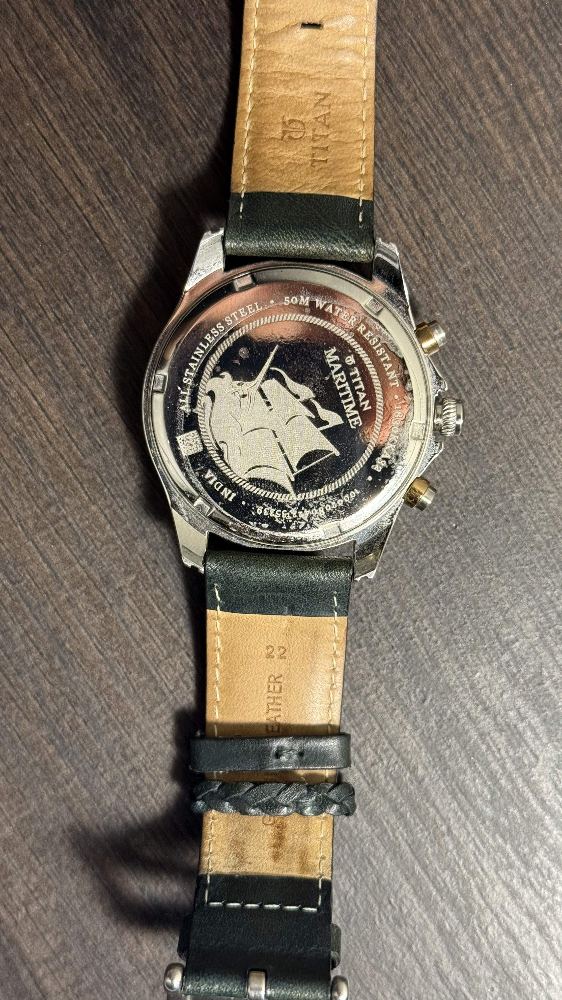
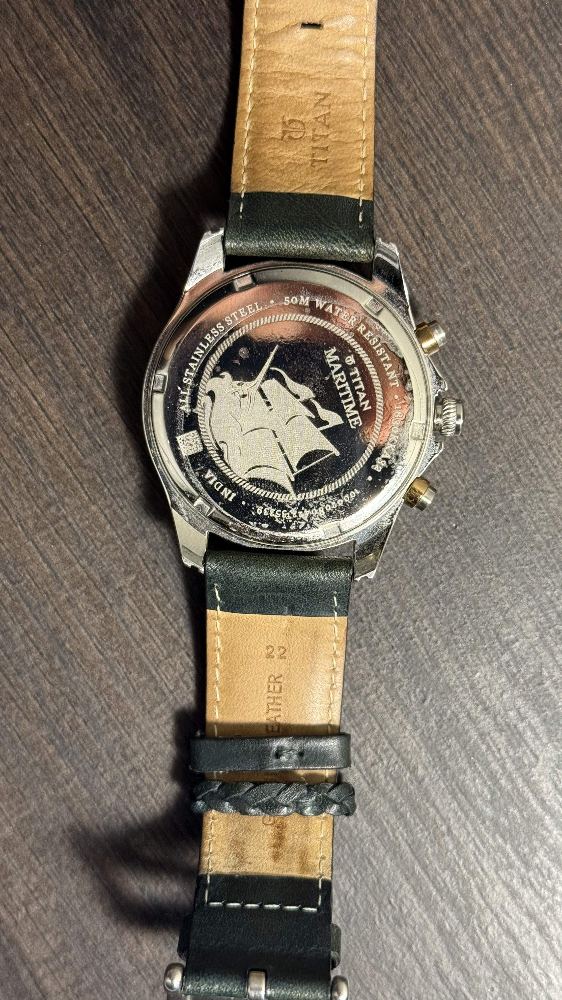

Titan Maritime Chronograph 1830KL01

Nautical Elegance Meets Practical Design
Price: $180
The Titan Maritime Chronograph 1830KL01 delivers a compelling blend of nautical-inspired design and practical functionality that punches well above its price point. After two years of consistent wear, this timepiece has proven to be a versatile companion suitable for both casual and semi-formal occasions.
At first glance, the watch's aesthetic immediately captivates with its striking white dial featuring lateen sail-inspired indices-a thoughtful design element that reinforces the maritime theme without being overly literal. The stainless steel case measures a comfortable 42mm diameter with a slim 11mm profile that slides easily under shirt cuffs. The genuine leather strap in rich brown complements the white dial beautifully and develops a pleasant patina with regular wear, though it does require approximately a week to fully break in and conform to the wrist.
The chronograph functionality operates with satisfying precision. The main second hand sweeps smoothly when timing events, while the subdial at 9 o'clock tracks small seconds and the date window at 3 o-clock shows the date. The pushers provide just the right amount of resistance—firm enough to prevent accidental activation but not so stiff as to be difficult to operate. Water resistance is rated at 50 meters, making it splash-proof and suitable for brief immersion, though not ideal for swimming or water sports—a limitation worth noting for those seeking a true dive watch alternative.
Nighttime legibility exceeds expectations thanks to the generously applied luminous material on the hands and hour markers. After charging in daylight, the lume emits a consistent blue glow that remains visible throughout the night, outperforming several watches at similar price points. The mineral crystal has proven reasonably resilient against minor impacts and daily wear, though it lacks the scratch resistance of sapphire found in higher-end timepieces.
The Japanese quartz movement provides exceptional accuracy, deviating by only 2 seconds over my three-week testing period. While mechanical watch enthusiasts might prefer an automatic movement for its craftsmanship, the maintenance-free nature of quartz makes this an excellent option for daily wear. Battery life is rated at approximately 3 years, aligning with industry standards for similar chronograph movements.
| Pros | Cons |
|---|---|
| Elegant nautical design with distinctive indices | Chronograph seconds hand occasionally misaligns |
| Excellent lume performance | Crown doesn't screw down for extra water protection |
| Precise Japanese quartz movement | Limited 50m water resistance |
| Comfortable 42mm case size | Leather strap requires break-in period |
| Quality leather strap develops nice patina |
Gallery: My Custom Build

 

The Titan Maritime 1830KL01 represents exceptional value for a chronograph with such thoughtful design details and reliable functionality. For those seeking a nautically-inspired timepiece that balances aesthetic appeal with everyday practicality, this Titan offering deserves serious consideration. It successfully captures the essence of much pricier marine chronographs while maintaining an accessible price point that makes it an excellent entry point into stylish chronograph watches.